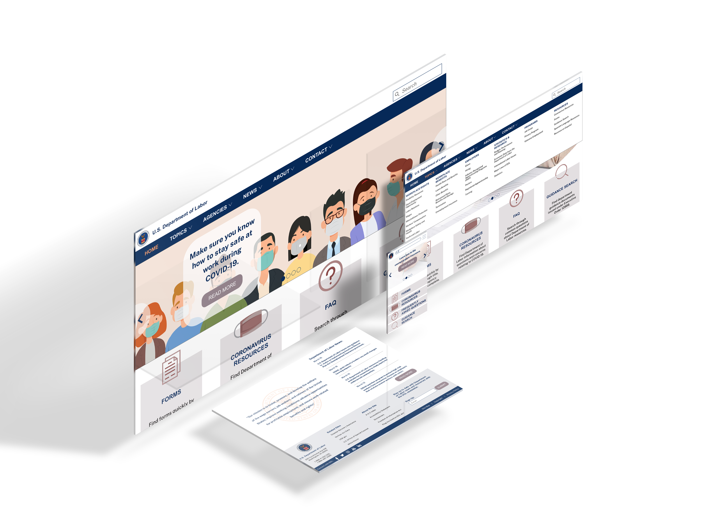

My UX/UI Work


Dept. of Labor Redesign
Redesigned the DOL homepage and navigation based on users' pain points. Retained feedback from users to iterate meaningfully. Focused on accessibility.

Spark
A productivity app for creative millennials to achieve their goals and focus on passions. Researched user pain points and iterated based on feedback and competitor analysis.